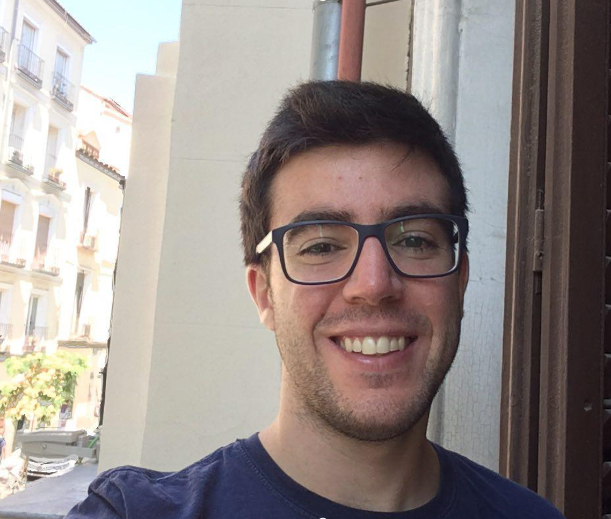

Contact informationEmail: diego dot martinez at uni-muenster dot de About meI am a postdoctoral researcher at the Mathematical Institute of WWU Münster, in Germany, under the supervision of Wilhelm Winter. I started my undergraduate studies at the Universidad Autónoma de Madrid, where I then did my master. From September 2016 up until March 2021 I was a Ph.D. student in the UC3M, with a MINECO fellowship in the ICMAT. I defended my dissertation on March 5th, 2021, and got an excellent - cum laude grading. |
 |
Research interests
I study primarily C*-algebras and inverse semigroup theory, covering from classification of C*-algebras to hypertraces and Følner sequences. Since the notion of amenability is so widespread, however, I am as well interested in other areas, such as coarse geometry, groupoids and K-theory.